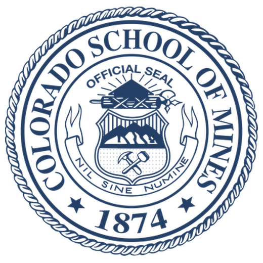
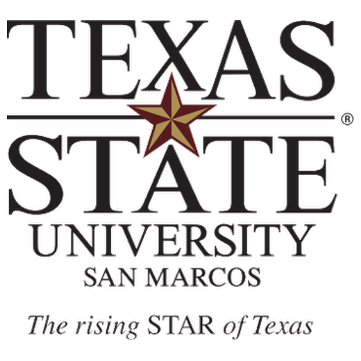
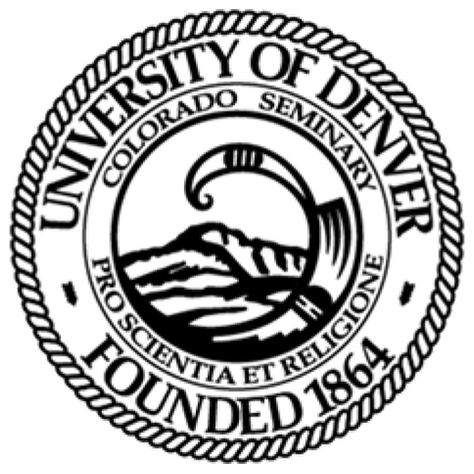

Profile
Associate Professor of Mathematics at Sam Houston State University. My work combines research in Ramsey theory, ultrafilters, and foundations of mathematics with sustained teaching innovation in undergraduate and graduate mathematics. My teaching is grounded in backward design, constructive alignment, active learning, mastery-oriented assessment, public mathematical writing, and mentorship through independent study and student research.
Academic Appointments
Sam Houston State University, Huntsville, Texas
Associate Professor of Mathematics. Promoted with tenure effective September 1, 2023; the May 2023 minutes of the Board of Regents of the Texas State University System list the action as a promotion with tenure from assistant professor in Mathematics and Statistics.
Sam Houston State University, Huntsville, Texas
Assistant Professor of Mathematics. Taught across the undergraduate curriculum, graduate logic, and directed studies. Tenure-portfolio course history includes nine sections of precalculus algebra, three sections of college mathematics, three sections of trigonometry, five sections of calculus I, five sections of calculus II, differential equations, introduction to mathematical thought, algebraic structures, and three graduate sections of mathematical logic. Directed independent studies included social choice theory, mathematical logic, and set theory.

Colorado School of Mines, Golden, Colorado
Postdoctoral Teaching Scholar in Mathematics. Taught introduction to proofs, calculus I-III, linear algebra, and a large differential equations section. Co-advised the 2015 and 2016 Putnam teams; the 2015 team scored in the top 10 percent nationally. Directed an independent study in combinatorial set theory.

Texas State University, San Marcos, Texas
Lecturer in Mathematics. Taught three sections of college algebra, two sections of precalculus, and three sections of calculus II.

University of Denver, Denver, Colorado
Instructor and Graduate Teaching Assistant in Mathematics. As instructor, taught two sections of calculus I, two sections of calculus II, and a mathematics freshman seminar. Also taught or assisted in business calculus, multivariable calculus, differential equations, history of mathematics, introduction to proofs, abstract algebra, topology, and metric spaces.
New Mexico Institute of Mining and Technology, Socorro, New Mexico
Instructor in Mathematics. Taught three sections of algebra, one section of trigonometry, and one section of calculus II.
Education
University of Denver
Ph.D. in Mathematics. Dissertation: Topological Ramsey spaces, associated ultrafilters and their applications to the Tukey theory of ultrafilters and Dedekind cuts of nonstandard arithmetic. Advisor: Natasha Dobrinen.
Dissertation PDF: Topological Ramsey spaces, ultrafilters, Tukey theory, and Dedekind cuts
New Mexico Institute of Mining and Technology
M.S. in Mathematics, specialization in analysis. Thesis: Attractors for nonlinear reaction-diffusion equations in unbounded domains. Advisor: Bixiang Wang.
Master's thesis PDF: Attractors for nonlinear reaction-diffusion equations
New Mexico Institute of Mining and Technology
B.S. in Mathematics, minor in education.
Research Areas
Ramsey theory, topological Ramsey spaces, ultrafilters, nonstandard models of arithmetic, mathematical logic, set theory, mathematical pedagogy, and curriculum design.
Teaching, Curriculum, and Course Design
Curriculum and teaching innovation, Sam Houston State University
- Built full workbook-style course systems for differential equations and calculus III, organized around cycles of lecture, classwork, homework, quiz, and review.
- Maintained a public-facing course architecture for calculus II with weekly notes, classwork, homework, and solutions.
- Redesigned Blackboard delivery using HTML-based materials and revised instructional videos to improve clarity, consistency, and navigation.
- Presented Elasticity First: A New Starting Point for Calculus at the 104th Annual Meeting of the Texas Section of the MAA, Prairie View A&M University, March 29, 2025.
Standards-based grading in Algebraic Structures, SHSU
Designed and implemented a first-run mastery-based assessment system for MATH 4377 Algebraic Structures organized around 42 specific learning objectives. Assessment pathways included written proofs, presentations, portfolios, oral examinations, quizzes, and exams. Built multiple hand-written variations of proof and computation tasks for reassessment.
Emporium and flipped instruction, SHSU
Used both emporium-style and flipped-course models in precalculus algebra and college algebra settings. As course coordinator for MATH 1314 and MATH 1316, helped maintain common exams, common objectives, common schedules, OER adoption, and shared online learning resources.
Professional development in teaching
Project NExT fellow, 2017, and Texas Section NeXT fellow, 2017-2018. Regular participant in Texas Section NeXT activities at MAA sectional and TUMC meetings. Additional professional development includes SHSU online faculty training, the Dana Center mathematics pathways workshop, and the Poorvu Center Mobile Summer Institute on Scientific Teaching.
Student Mentoring, Supervision, and Presentations
Directed studies, research supervision, and presentation outcomes
Mentored undergraduate and graduate students through directed studies, independent studies, capstone work, and research projects in logic, combinatorics, set theory, combinatorial set theory, social choice theory, generalized trigonometric systems, mathematical modeling, chaos theory, modal graph theory, and philosophy of mathematics. Student projects have led to presentations at the Joint Mathematics Meetings, Texas Undergraduate Mathematics Conference, discrete mathematics seminars, and undergraduate journals.
- Nathan Collins, independent study in mathematical logic. Project on formalizing Yablo's paradox with Turing machines; led to a research presentation.
- Tabitha Williams, independent study in logic. Project on modal triangle-free graph theory; led to presentations at the Texas Undergraduate Mathematics Conference, 2025, and the Joint Mathematics Meetings, 2026.
- Krystal Evans, M.A. capstone: The Inexpressibility of Two-Colorability in First-Order Graph Logic.
- Kierra Vigil, Bridge Cost Optimization, Texas Undergraduate Mathematics Conference, San Antonio, October 2025.
- Nathan Collins, Formalizing Yablo's Paradox with Turing Machines, Texas Undergraduate Mathematics Conference, San Antonio, October 2025.
- Tabitha Williams, Triangle-Free Modal Graph Theory, Texas Undergraduate Mathematics Conference, San Antonio, October 2025.
- Jacob Gomez, Angel Moreno, and Alicia Scarlett, Dishware Optimization, Texas Undergraduate Mathematics Conference, Tyler, November 2024.
- Victor Ofe, Positional games and the probabilistic method, Joint Mathematics Meetings, Denver, January 2020.
- John Falade, Completeness theorem for zero-order logic, Joint Mathematics Meetings, Denver, January 2020.
- Victor Ofe, Positional games and the probabilistic method, Texas Undergraduate Mathematics Conference, Tyler, October 2019.
- Andrew Warren, Arrow's theorem and non-Ramsey sets, Texas Undergraduate Mathematics Conference, Tyler, October 2019.
- Del Valle, Robles, Daniels, Jimenez, and Clark, AM-GM any baby's BMs, Texas Undergraduate Mathematics Conference, Nacogdoches, October 2018; project led to a publication in Ball State Undergraduate Mathematics Exchange.
- Connor Mattes, Triangular Ramsey numbers, AMS contributed paper session on undergraduate research, Joint Mathematics Meetings, Atlanta, January 2017.
- Connor Mattes and Zachary Chaney, Triangular Ramsey numbers, Joint Meetings of the Rocky Mountain and Intermountain Sections of the MAA, April 2016; University of Denver Graduate Colloquium, November 2016; project led to a publication in INTEGERS.
- Directed studies have included set theory, combinatorial set theory, social choice theory, mathematical logic, modal graph theory, fractals, chaos theory, and philosophy-of-mathematics topics such as category theory and hyperobjects.
Publications and Preprints
- Timothy Trujillo, Parametrizing by the Ellentuck Space. Fundamenta Mathematicae 255, 2021.
- Timothy Trujillo, V. Del Valle, J. Robles, E. Daniels, J. Jimenez, and A. Clark, AM-GM any baby's BMs. Ball State Undergraduate Mathematics Exchange 14.1, 2020.
- Timothy Trujillo, Condorcet's Paradox and Ultrafilters. American Mathematical Monthly, 2020.
- Timothy Trujillo, Connor Mattes, J. Menard, and Zachary Chaney, Triangular Ramsey numbers. INTEGERS 19, 2019.
- Natasha Dobrinen, Jose Mijares, and Timothy Trujillo, Topological Ramsey spaces from Fraisse classes, Ramsey-classification theorems, and initial structures in the Tukey types of p-points. Archive for Mathematical Logic, 2017.
- Timothy Trujillo, Selective but not Ramsey. Topology and its Applications 202, 2016.
- Timothy Trujillo, Ramsey for R1 ultrafilter mappings and their Dedekind cuts. Mathematical Logic Quarterly 61, 2015.
- Timothy Trujillo and Bixiang Wang, Continuity of strong solutions of the reaction-diffusion equation in initial data. Nonlinear Analysis: Theory, Methods & Applications 69, 2008.
- John Brandt, Geraint Jones, David McComas, Martin Snow, Timothy Trujillo, and Amanda Burghard, Observations of cometary plasma tails and the heliosphere near solar maximum. Proceedings of Asteroids, Comets, Meteors, 2002.
- Timothy Trujillo, Hypernatural numbers in ultra-Ramsey theory. Under review.
Selected Invited and Contributed Talks
- Elasticity First: A New Starting Point for Calculus. 104th Annual Meeting of the Texas Section of the MAA, Prairie View A&M University, March 2025.
- Invited: The Nash-Williams theorem and iterated-hyper extensions. AMS Western Sectional Meeting, Special Session on Ramsey Theory of Infinite Structures, May 2022.
- Three lectures in the SHSU Logic Seminar, Fall 2021.
- Invited: Condorcet's Paradox and Ultrafilters. REU Speaker, University of Texas at Tyler, July 2019.
- Invited: Condorcet's Paradox and Ultrafilters. Second International Conference on Applications of Mathematics to Nonlinear Sciences, Pokhara, Nepal, July 2019.
- Condorcet's Paradox and Ultrafilters. Joint Mathematics Meetings, Baltimore, January 2019.
- Invited panelist on applying to graduate school, Texas Undergraduate Mathematics Conference, October 2018.
- Condorcet's Paradox and Ultrafilters. Texas Undergraduate Mathematics Conference, Nacogdoches, October 2018.
- Hypernatural numbers in ultra-Ramsey theory. BLAST 2018, University of Denver, August 2018.
- Invited: Hypernatural numbers in ultra-Ramsey theory. RaTLoCC 2018: Ramsey Theory in Logic, Combinatorics and Complexity, Bertinoro, Italy, July 2018.
- Invited: Hypernatural numbers in ultra-Ramsey theory. Joint Mathematics Meetings, San Diego, January 2018.
- Invited: Higher-dimensional Ramsey theory. SFA Colloquium, April 2018.
- Triangular Ramsey numbers: an undergraduate research project. MathFest 2017.
- A nonstandard proof of the Nash-Williams theorem. 6th European Set Theory Conference, Budapest, July 2017.
- Invited: Parametrizing by the Ellentuck space. Fields Institute, Toronto, March 2017. Slides.
- Invited: Topological Ramsey theory. CU Boulder Colloquium, February 2017.
- With Kelley Tatangelo, Implementing a team-based partially-flipped approach to linear algebra. JMM Special Session on Innovative and Effective Ways to Teach Linear Algebra, January 2017.
- Parametrizing by the Ellentuck space. ASL Contributed Paper Session, Joint Mathematics Meetings, Atlanta, January 2017. Slides.
- Invited: Parametrizing by the Ellentuck space. AMS Special Session on Set Theory of the Continuum, University of Denver, October 2016. Slides.
- From alpha-Ramsey theory to abstract ultra-Ramsey theory. SetTop 2016, University of Novi Sad, Serbia, June 2016. Slides.
- Ramsey theory via functional extensions. Front Range Logic Saturday, University of Denver, May 2016.
- Alpha-Ramsey theory. Joint Meeting of the Rocky Mountain and Intermountain Sections of the MAA, Colorado Mesa University, April 2016. Slides.
- Higher-dimensional Ramsey theory. Departmental colloquium, Colorado School of Mines, October 2015.
- Higher-dimensional Ramsey theory. Discrete Mathematics Seminar, Texas State University, February 2015.
- Products of topological Ramsey spaces. BLAST 2014, New Mexico State University, January 2015. Slides.
- Basic Tukey reductions for selective and Ramsey filters on general topological Ramsey spaces. BEST 2014, University of California, June 2014. Slides.
- Invited: Topological Ramsey spaces, associated ultrafilters, and their applications to the Tukey theory of ultrafilters and Dedekind cuts of nonstandard arithmetic. Sesquicentennial Ramsey Theory Conference, University of Denver, May 2014. Slides.
- Selective but not Ramsey for R1. BLAST 2013, Chapman University, August 2013.
- A Ramsey classification theorem with an application to the Tukey theory of ultrafilters. BEST 2013, University of Nevada, Las Vegas, June 2013.
- A new Ramsey classification theorem with an application to the Tukey theory of ultrafilters. ASL North American Annual Meeting, University of Waterloo, May 2013.
- Invited: Selective and Ramsey ultrafilters for R1 and their Dedekind cuts. AMS Special Session on Set Theory and Boolean Algebras, University of Colorado Boulder, April 2013. Slides.
- Selective and Ramsey for R1 ultrafilters and their Dedekind cuts. Boulder Logic Seminar, University of Denver, April 2013.
- Several lectures in the graduate colloquium, algebra and logic seminar, and analysis and dynamics seminar at the University of Denver.
Grants, Honors, and Awards
- SHSU Enhanced Research Grant, Infinite ethics: a non-Archimedean approach, $15,000.
- Texas Section NeXT Fellow, Mathematical Association of America, 2017-2018.
- Project NExT Fellow, Mathematical Association of America, 2017.
- Outstanding Service to Students, Colorado State Mathematics Awards, 2016.
- Organized and judged the Colorado School of Mines Math Challenge, 2015 and 2016.
- First Place and Second Place Awards for Excellence in Mathematics, AAAS Pacific Division paper competition, 2013 and 2014.
- University of Denver Department of Mathematics GTA Teaching Excellence Award, 2013.
- Nominated by the University of Denver Department of Mathematics chair for the NSM Graduate Student Research Award, 2013.
- Judge, MathCounts Colorado State Competition, 2012 and 2013.
- Bill Dorn Lecturer, University of Denver, 2009.
Selected Service and Program Development
- Hiring committee chair for two tenure-track positions in mathematics, Sam Houston State University.
- Department policy committee, Sam Houston State University.
- Advisor for mathematics majors; contributed to rebuilding the math club.
- Course coordinator for MATH 1314 and MATH 1316, including shared assessment systems, OER adoption, and embedded tutoring coordination.
- Co-organizer of SHSU logic seminar and contributor to graduate curriculum development, including catalog addition work for mathematical logic.